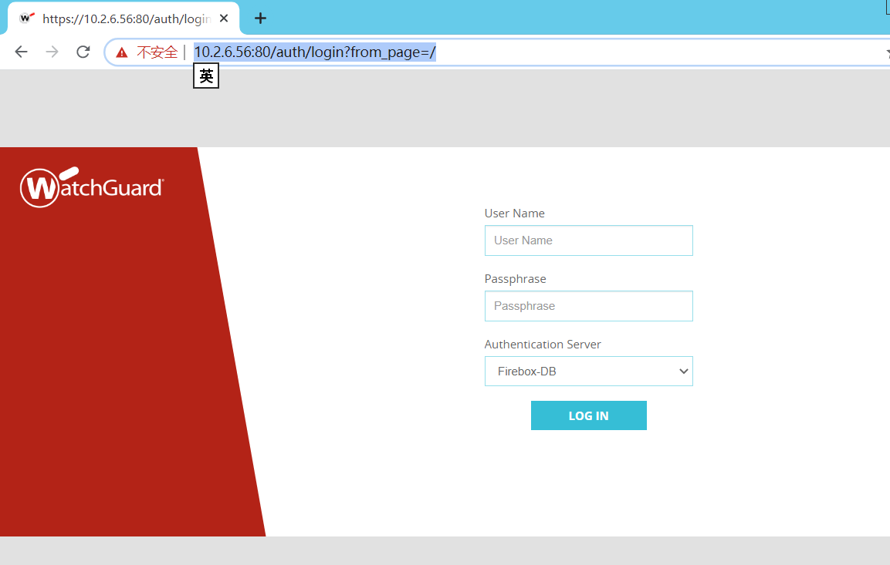
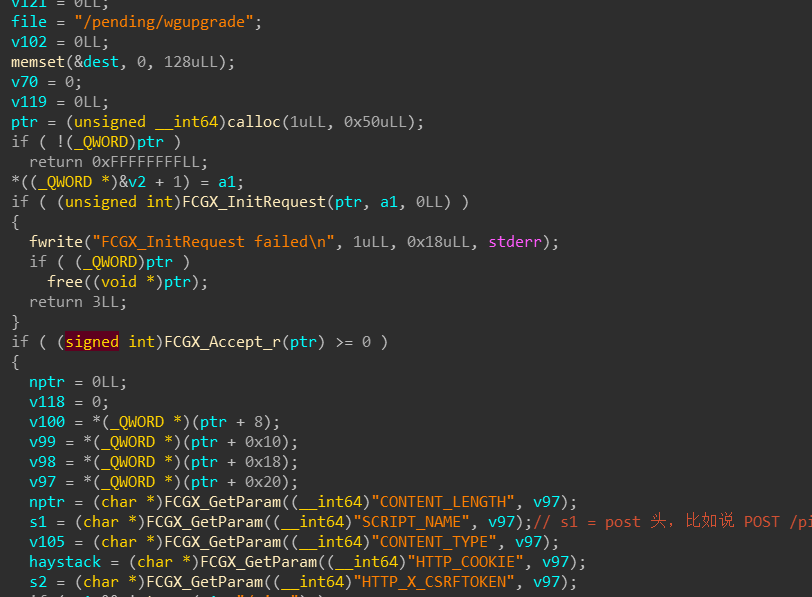

watchguard
条评论WatchGuard 全球首创专用安全系统，在 1997 年首家将应用层安全运用到系统，并在 2004 年全球首创可全面升级的整合安全网关。2005 年 WatchGuard 推出了Fireware Pro 操作系统和 Firebox Peak 高端安全设备，2009 年 WatchGuard 推出了基于全新技术的 Fireware XTM 操作系统和 Firebox XTM 10系和8系高端安全设备，2011年推出3系列，20系列产品，并整合全球各种优秀的信息安全技术推出整合式的安全网络网关平台 (UTM，统一威胁管理)，为市场提供了更安全、更全面、更强大的安全设备。
从qcow2获取firebox的OS
1 | # 挂载 |
执行完挂载命令之后，可以看到桌面上多3个设备文件。打开最大的那个，里面就是整个firebox的系统。
这3 文件所在位置，在 /media/root 下。用 tar 打包一下文件系统。
1 | root@kalifirmware:/media/root/0cf094c7-7cf6-4512-91d9-05d3a9936a89# pwd |
WEB UI 外网访问
参考链接：https://sakura-paris.org/WatchGuard
这里只是简单记录了下，具体过程看参考文章，写的很详细。
它有ping traceroute 等操作，在 SYSTEM STATUS => Diagnostics => “Network” 下。
想要外网能访问WEB UI，要配置端口映射。
1 创建 Static NAT 规则
首先，位置在 Web UI -> Firewall -> SNAT
点击 ADD，输入一个名字。然后在 SNAT MEMBERS 区域点击 ADD
这里配置如下，HOST 填内网的 watchguard web ui 的 ip ，勾中 Set internal port to a different port ，端口填80。
最后ok ，然后保存。
创建防火墙规则
位置：Web UI -> Firewall -> Firewall Policies
Add Policy -> 选择 Custom，然后点击右侧的 Add 去创建一个 “Policy Template”，如下图配置。
回到了 Add Firewall Policy 界面，选一下TCP-UDP-Proxy。然后点 ADD POLICY。
继续配置。如下。
最后点击 SAVE 即可。这样就创建了一个从路由器公网 tcp/80 到 10.2.6.56:tcp/8080 的端口映射。
这样就能路由器公网上访问到 watchguard web ui 。

测试
能够外部网访问web UI后，用burpsuit进行抓包分析测试。
登陆
首先是对登陆过程分析。
从抓到的包来看，用户名和密码都是明文传输的。看起来比较危险，但这或许是firefox web ui 正常情况只能在内网访问，所以不需要做加密处理也没问题。
从cookie 这里看到2个字段，sessionid和session_id` 。 经过测试发现它这个 session_id 没什么用，有 sessionid 就行。而且这个 sessionid 不会过期，只要是正确的就可以。
登陆成功后，返回的包。
Ping
在登陆这块分析了一圈，没有什么发现。所以，还是登陆进来后到处看看。
在 System status -> Diagnostics -> network 有 ping，traceroute等命令，可以填上 IP 地址进行测试。分析一下这里，有否有命令执行这样的漏洞。
抓个包先看看。
数据传输以json格式在进行，那么大概率没啥希望。
经过一番寻找，找到处理这里的脚本是 PageStatusDiagnostics.pyc ，是个pyc，用uncompyle反编译一下。
1 | root@kalifirmware:~/Desktop/watchguard# pip install uncompyle |
源码如下。
看源码就可以知道，command 参数被限制死了。然后通过 /utility/xxx 来执行args。这不会存在什么命令注入。
想找命令注入，那么得有system，eval等这类函数才行。那么，接着对整个文件系统进行搜索，匹配关键字。
Wgagent
Watchguard 的web 服务由 wgagent 控制。
用IDA对wgagent 进行分析。梳理登陆的流程，以及页面的访问和验证逻辑。
Main
主函数main，AddListener函数中包含了web页面的控制流程。
具体在函数 sub_415796 -> sub_410A0E

sub_410A0E
主要的逻辑如下。
SCRIPT_NAME 中取出请求。下面用if 进行判断，若不是 /ping 请求，就走else。这个else里会进行登陆的验证。若是 /login 或 /agent/login 就进行登陆的账户验证。
不是的话，就去下一个else，如下图。
这里会计算sessionid 或者sid 是不是正确的。不正确就返回Unauthorized，过期就返回expired。
小结
对watchguard web ui这块初步的分析，发现它的很多功能都是靠 js 和 py 来实现和控制。与路由器的web服务不同。路由器的Web服务大多有一个核心的处理http请求的 ELF 文件。
下面，对watchguard曾经被曝光的漏洞进行归纳整理。看看以前发现的漏洞，都是什么类型的，方便进一步的研究。
vulnerability
-
5.8.5.10317之前的WatchGuard Fireware中的AD Helper组件允许远程攻击者通过/ domains / list URI发现明文密码。
-
通过12.1.3在WatchGuard XMT515上已发现基于DOM的XSS漏洞，从而允许远程攻击者通过诱骗受害者单击虚构链接来在受害者的浏览器中执行JavaScript。 有效负载已在Microsoft Internet Explorer 11.418.18362.0和Microsoft Edge 44.18362.387.0（Microsoft EdgeHTML 18.18362）中进行了测试。
-
在固件版本为1.2.9.15之前的WatchGuard AP100，AP102和AP200设备以及固件版本为2.0.0.10之前的AP300设备上发现了问题。 更改密码表单中“旧密码”字段的不正确验证使攻击者可以绕过此字段的验证。
-
在固件版本为1.2.9.15之前的WatchGuard AP100，AP102和AP200设备以及固件版本为2.0.0.10之前的AP300设备上发现了问题。 文件上传功能允许在Web界面上通过身份验证的任何用户将包含代码的文件上传到Web根目录，从而允许这些文件以root身份执行。
-
在固件版本低于1.2.9.15的WatchGuard AP100，AP102和AP200设备上发现了一个问题。本机访问点Web UI进行的身份验证处理不当，从而允许使用本地系统帐户（而不是专用的纯Web用户）进行身份验证。
-
在固件版本低于1.2.9.15的WatchGuard AP100，AP102和AP200设备上发现了一个问题。 对于/ bin / false shell 程序的非特权SSH帐户，存在硬编码的凭据。
-
WatchGuard Fireware v11.12.1和更早版本在XML-RPC代理中错误地处理了引用XML外部实体（XXE）的请求。 这会导致Firebox wgagent进程崩溃。 此过程崩溃将终止所有到Firebox的经过身份验证的会话，包括管理连接，并在过程恢复之前阻止新的经过身份验证的会话。 当wgagent进程恢复时，Firebox的性能可能也会整体下降。 攻击者可能会不断发送包含对外部实体的引用的XML-RPC请求，以对受影响的Firebox进行有限的拒绝服务（DoS）攻击。
-
WatchGuard Fireware允许用户枚举，例如在Firebox XML-RPC登录处理程序中。 包含发送到Fireware v11.12.1和更早版本中的XML-RPC代理的空白密码的登录请求将返回对有效和无效用户名的不同响应。 攻击者可能利用此漏洞来枚举受影响的Firebox上的有效用户名。
-
在12.0之前的WatchGuard Fireware中发现了FBX-5312问题。 如果使用包含空成员元素的XML消息在XML-RPC界面中尝试登录，则wgagent会崩溃，并注销在UI中打开了会话的任何用户。 通过连续执行失败的登录尝试，将无法对设备进行UI管理。
-
在12.0之前的WatchGuard Fireware中发现了FBX-5313问题。 当对XML-RPC接口的登录端点进行失败的登录尝试时，如果将经过正确编码以供XML解析器使用的JavaScript代码作为用户元素的值嵌入，则该代码将在任何 登录到Web UI中的用户，访问“流量监控器”部分的“事件”和“全部”。 副作用是，重新启动设备之前，流量监视器中不会显示其他事件。
-
WatchGuard RapidStream设备允许本地用户通过特制的ifconfig命令（也称为ESCALATEPLOWMAN）获得特权并执行任意命令。
-
Watchguard Fireware 11.11操作系统中的身份验证小程序已反映了XSS（这也可能导致打开重定向）。
-
在版本150522之前，Watchguard XCS 9.2和10.0允许经过远程身份验证的用户通过ADMIN / mailqueue.spl的id参数中的 shell metacharacters 执行任意命令。
-
在版本150522之前的Watchguard XCS 9.2和10.0中的SQL注入漏洞允许远程攻击者通过sid cookie执行任意SQL命令，如对borderpost / imp / compose.php3的请求所示。
-
通过防火墙/策略脚本中的poll_name参数，WatchGuard XTM 11.8.3中存在一个跨站点脚本（XSS）漏洞。
WatchGuard Fireware XTM 11.8.3之前的防火墙策略管理页面中的多个跨站点脚本（XSS）漏洞允许远程攻击者通过pol_name参数注入任意Web脚本或HTML。
-
11.8之前的WatchGuard WSM和Fireware中WGagent中的缓冲区溢出允许远程攻击者通过cookie中的长sessionid值执行任意代码。
-
11.8之前的WatchGuard WSM和Fireware中WebCenter中的多个跨站点脚本（XSS）漏洞允许远程攻击者通过未指定的参数注入任意Web脚本或HTML。
-
WatchGuard Server Center 11.7.4、11.7.3和更早版本中的（1）Watchguard Log Collector（wlcollector.exe）和（2）Watchguard WebBlocker Server（wbserver.exe）中存在多个不受信任的搜索路径漏洞，它们允许本地用户获得特权 通过该应用程序的bin目录中的特洛伊木马wgpr.dll文件。
-
WatchGuard XCS 9.0和9.1中的STARTTLS实现没有适当地限制I / O缓冲，它允许中间人攻击者通过发送在TLS到位后处理的明文命令将命令插入加密的SMTP会话中，这与相关 遭受“明文命令注入”攻击，与CVE-2011-0411相似。